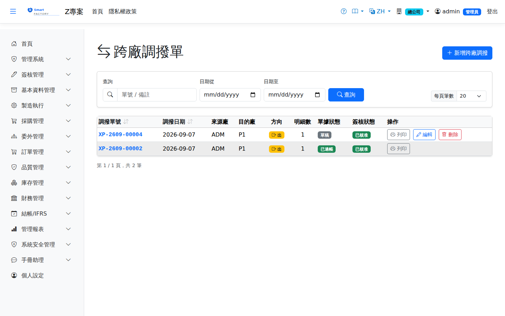

跨廠調撥單Cross-Plant Transfer
跨廠移轉採五階段狀態機：來源廠全部出庫後轉「在途 InTransit」，鎖定移轉成本；目的廠確認入庫後轉已過帳；短溢差異可強制結案（差異自動產生來源廠調整）。目的廠人員以「跨廠入庫」視角查詢在途單據辦理收貨。Cross-plant transfer follows a five-stage state machine: once the source plant has issued everything the document becomes "In Transit" and the transfer cost is locked; after the target plant confirms the receipt it becomes posted. Short or over receipts can be force-closed, and the difference automatically creates an adjustment in the source plant. Staff at the target plant query in-transit documents from the "Cross-Plant Receipt" view to take delivery.

查詢Search
單據狀態Status
| 狀態Status | 說明Guide |
|---|---|
| 草稿Draft | 建單中，可編輯。Being created; editable. |
| 已確認Confirmed | 生效，等待來源廠出庫。Effective, waiting for the source plant to issue the stock. |
| 在途 InTransitIn Transit | 來源廠已全部出庫，貨在途；不可直接作廢。Everything has been issued by the source plant and the goods are in transit; it cannot be voided directly. |
| 已過帳Posted | 目的廠全部入庫（或強制結案）。The target plant has received everything (or the document was force-closed). |
| 已作廢Cancelled | 入庫前反沖出庫。Reverse the issue before receiving. |
作業流程Process
跨廠調撥Cross-plant transfer
列印Printing
清單每列的 按鈕（需有列印權限）在新分頁開啟含 QR Code 的列印單，可直接列印或另存 PDF。列印單的出貨廠、收貨廠與兩端倉庫都印出名稱；收貨廠的倉庫依收貨廠的基本資料查名。The button on each row of the list (print permission required) opens a printout with a QR code in a new tab, ready to print or save as PDF. The printout shows the names of both plants and both warehouses; the receiving warehouse name is looked up in the receiving plant's master data.
欄位說明Field reference
表頭Header
| 欄位Field | 說明Guide |
|---|---|
| 跨廠調撥單號Cross-plant transfer No | 系統採番，不可修改Numbered by the system; not editable |
| 調撥日期Transfer Date | 必填Required 調撥生效日Transfer effective date |
| 來源廠別Source Plant | 發料廠別，固定為目前所屬廠別，不可修改Issuing plant, fixed to your current plant and not editable |
| 目的廠別Destination Plant | 必填Required 收料廠別；必須與來源廠別不同Receiving plant; must be different from the source plant |
| 來源倉庫 / 目的倉庫Source WH / Dest WH | 必填Required 兩端的預設倉庫，明細可逐行覆寫Default warehouse for each side; lines can override it individually |
| 備註Notes | 整張單據的補充說明Notes for the whole document |
明細Lines
| 欄位Field | 說明Guide |
|---|---|
| 品號Item | 必填Required 要調撥的料件Item to transfer |
| 數量 / 單位Qty / UOM | 必填Required 調撥數量與計量單位。選了品號後，單位只列該品號的庫存單位與查得到換算的單位（預設庫存單位）；存檔時系統依品號主檔換算成庫存數量入帳，查不到換算的單位會擋下並說明。Transfer quantity and unit of measure. Once a product is chosen, the unit list shows only its stock unit and the units that convert to it (stock unit preselected); on save the system converts to the stock quantity from the product master, and a unit with no conversion is rejected with an explanation. |
| 來源倉庫 / 來源儲位Source WH / Source Location | 必填Required 發料廠的扣帳位置。也可按欄位旁的放大鏡開啟「選擇庫存」視窗，內含該品號各處的倉庫、儲位、批號、帳上數量、已預留與可用量，選取一列後自動回填倉庫、儲位與批號。若該品號另有保留給訂單／工單的量，視窗上方會以黃色提示列出（這些量不落在儲位上，表格的「可用」沒有扣除；出貨時超過「在手 − 保留」會被擋）。Location the stock is taken from in the issuing plant. You can also click the magnifier beside the field to open the stock picker, which lists the warehouse, location, lot, on-hand, reserved and available quantity everywhere that item is held; selecting a row fills in the warehouse, location and lot for you. If some of the item is also reserved for orders or work orders, a yellow notice at the top of the window lists it (those reservations are not tied to a location, so "Available" in the table does not deduct them; shipping more than on-hand minus reserved is blocked). |
| 批號Lot No | 要調撥的是哪一個批號的庫存；兩廠用同一個批號，收貨後原樣出現在目的廠。空白＝調撥沒有批號的庫存。可用量依「儲位＋批號」判斷。箱子貼有固定 QR 時，直接在這一欄掃箱號，系統會換成該箱目前的批號，並帶出品號、來源儲位與整箱數量；箱子跟著貨到目的廠後，在目的廠的箱子畫面「回收」接手。Which lot to send; both plants use the same lot number, and after receipt it appears unchanged in the destination plant. Leave it blank for items without a lot. Availability is checked per location and lot. If a box carries a fixed QR label, scan its box number into this field and the box's current lot, item, source location and full quantity are filled in; when the box arrives with the goods, take it over with "Recover" on the destination plant's Boxes screen. |
| 目的倉庫 / 目的儲位Target warehouse / Target location | 必填Required 收料廠的入帳位置Receiving location in the receiving plant |
跨廠調撥同時異動兩個廠別的庫存，權限與查詢皆受廠別隔離約束，需具備兩端廠別的作業權限。A cross-plant transfer moves stock in two plants at once; permissions and queries are both subject to plant isolation, so you need operating rights in both plants.